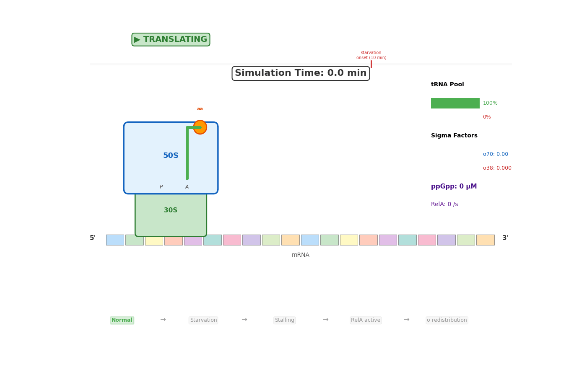

Computational biology, data analysis, and research training
Advance your bioinformatics and scientific research skills
CompBio provides advanced training in Python, R, genomics, and scientific workflows with polished projects and portfolio-ready outcomes.
What we do
- Advanced bioinformatics training
- Python and R programming
- NGS and genomics data analysis
- Scientific research workflows
- Portfolio and research presentation support
About
We design advanced bioinformatics programs and research training for aspiring scientists. Our approach combines genome analysis, computational workflows, programming, and refined mentorship to deliver exceptional learning outcomes.
Research
Research and projects
Our work includes genome analysis, bioinformatics workflows, and systems biology research. We have experience in SARS-CoV-2 mutation review, genome sequencing of Citrobacter werkmanii, and computational biology projects that support discovery and scientific development.

Key strengths
- Bioinformatics and research skills
- Genome and transcriptome analysis
- Python/R programming for biology
- Scientific research preparation
Learning support
- Course guidance and mentorship
- Project-based training
- Portfolio development
- Resume and research presentation help
About us
We are dedicated to elevating bioinformatics education, research training, and technical excellence. Our programs combine programming, genomics, and scientific communication to prepare students for real-world research.
MS in Biotechnology and Genetic Engineering from Jahangirnagar University.
Projects in genome sequencing, SARS-CoV-2 mutation review, and advanced bioinformatics training.
Guiding learners through projects, portfolios, and research-ready outcomes.
Technical strengths
High-level skills in bioinformatics, data analysis, and scientific programming for research excellence.
Python, R, and Bash for data analysis and automation.
NGS, genomics, sequence analysis, and research workflows.
Presenting results clearly with reports, visuals, and documentation.
Collaborations
We collaborate with researchers and students to build tools, share knowledge, and refine computational workflows.
- Md Shahadat Hossain — GitHub profile
Who we are
We are a research-driven team focused on bioinformatics education, computational biology, and student development.
Researcher and educator in computational biology and bioinformatics.
Mentoring learners in data science, research methods, and academic development.
Research outputs
Featuring genome sequencing analysis, SARS-CoV-2 mutation review, and applied bioinformatics reporting.
Analysis of spike protein mutations, infectivity, and immune escape.
Complete genome analysis of Citrobacter werkmanii and related bioinformatics workflows.
Contact
Reach out to register for training, mentorship, and collaborative research opportunities.
Registration fee starts at 2500 BDT. Email tanvir@uchc.edu to enquire about seat availability, schedule, and enrollment.